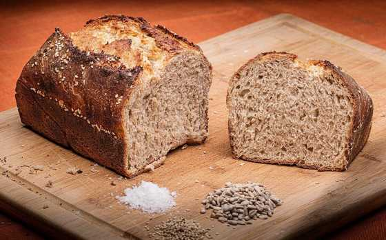
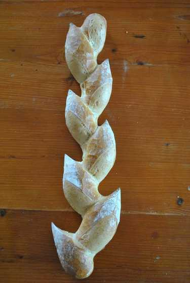
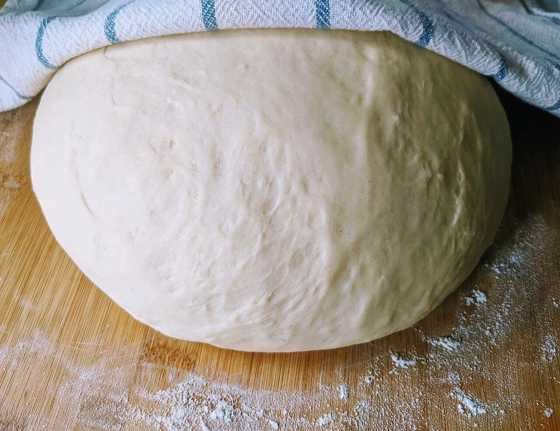
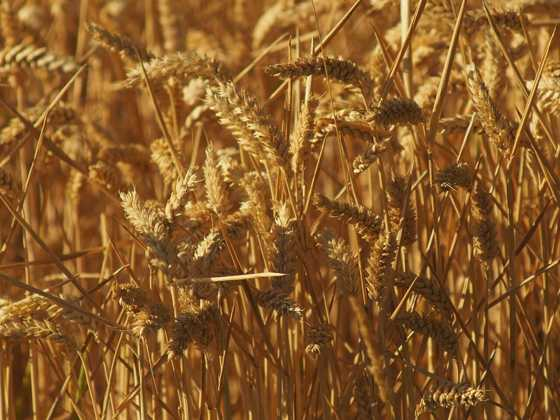

ベーカリー / 福岡県飯塚市
こぶたベーカリー
毎日ふらっと立ち寄りたくなる、まんまるで素朴な、身近なパン屋さん。

営業時間: 準備中Instagram
ABOUT
お店の由来・想い
こぶたベーカリーは、福岡県飯塚市綱分にある、2026年2月に開業したパン屋さんです。「毎日ふらっと立ち寄りたくなる、そんな身近なパン屋さんを目指している」と紹介されています。
看板は、国産小麦と湯種製法で焼くもちもち食感の「こぶた食パン」。上にちょこんと丸まった「ぶたのしっぽ」が目印とのことです。和菓子屋さんで働いた経験を生かした、求肥入りの季節限定デニッシュも紹介されています。
店名はオーナー夫妻にちなんだ名前と紹介されています。このページは、その親しみやすい響きから「まるくて、あたたかい、ふわふわ」を軸にした制作側のイメージで作った試作です。



BREAD
パンのこと
報道・紹介記事で確認できた商品の例です。価格・品ぞろえは変わることがあるため、最新情報はInstagramでご確認ください。
営業時間・定休日・価格: 準備中




VOICE
口コミ(イメージ例)
イメージ例
食パンがふわっともちっとしていて、朝ごはんが楽しみになりました。
イメージ例
種類がたくさんあって、どれにしようか迷う時間も楽しいお店です。
イメージ例
気さくな雰囲気で、ふらっと立ち寄りやすいパン屋さんだと思います。
※制作側が創作したイメージ例で、実在のお客様の声ではありません。



